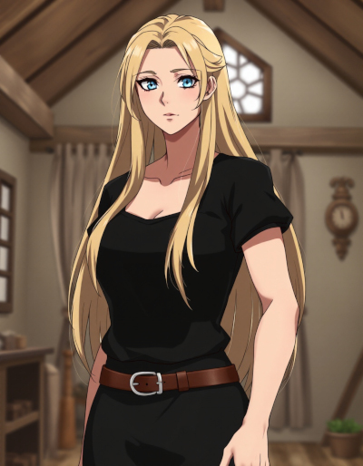

| Name | Marta Blackwell |
|---|---|
| Known Aliases | None |
| Title/Rank | Corporal (Dugaria Military) |
| Birthplace |
Village of Daleshade Cakana (Moon of Junas) |
| Occupation |
Witch Nurse (Dugaria) Artillery Witch (Dugaria) Artist (Space) Courier (Space) |
| Relationships |
Amelia Blackwell (Sister) Erika Blackwell (Mother) Iris Blackwell (Sister) Tim Blackwell (Father) The Dead Queen (Enemy) |
| Appearances |
Novels |
Marta Blackwell
Marta Blackwell is the sister of Amelia Blackwell.
She’s a tall woman, about six feet in height, with golden blond hair that’s usually loose down her back. She’s Caucasian, with blue eyes. She’s twelve years older than Amelia, making her about 45 years old in the opening scene of Starwitch. She’s usually described as very womanly, despite having a build like a lumberjack.
Marta is often depressed, due to the way her husband was murdered, just a short time after they were married. Even many years later, she prefers black clothing as an outward sign of mourning. Marta is often helpful to others, though she can’t stay as calm as her sister, Iris, during an emergency.
Marta enjoys assisting Amelia with her projects, often doing the heavy lifting for her.
It isn’t clearly stated, but Marta has enough skill with medicine to serve effectively as a nurse, something she did in Dugaria, before she and her sisters were drafted into the military.
She was raised as a total pacifist by her mother, a fact that caused her significant stress and emotional strain during her time in the Dugaria military, because she was forced to serve as an Artillery Witch, burning men alive with her magic.
She has great talent for earth and fire magic.
When the sisters escaped their home moon, Marta discovered a talent for ceramic art, which she combined with runic enchantments. Her art is one of the big money-makers for the Blackwell sisters.